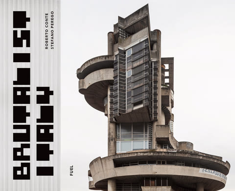
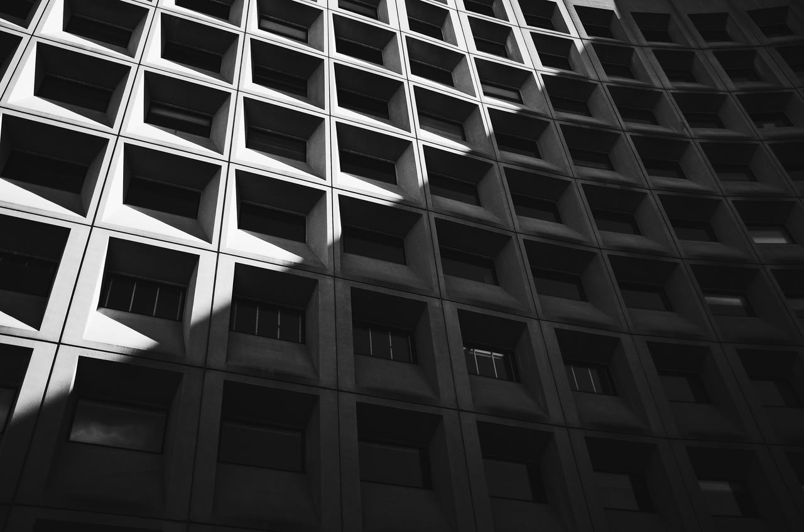
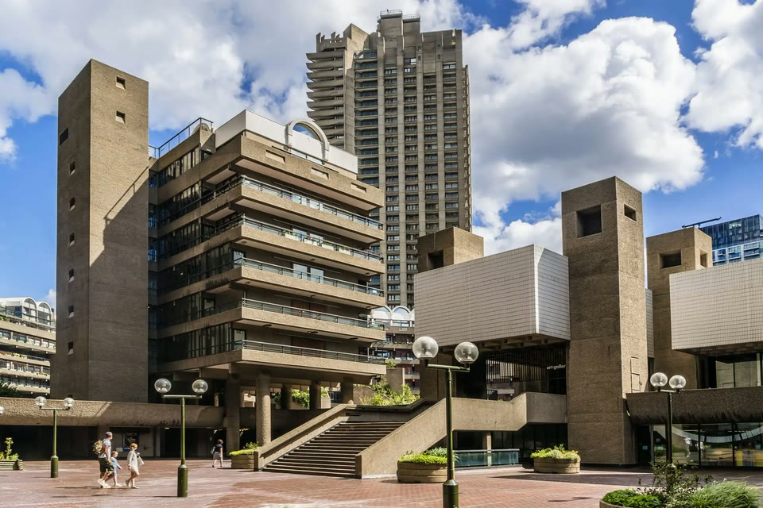
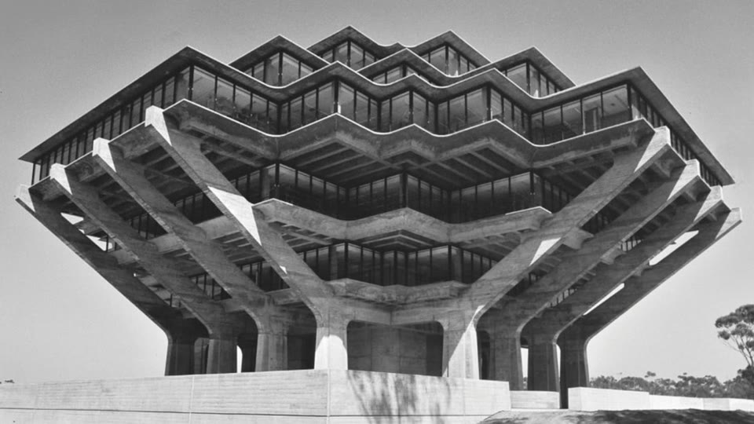
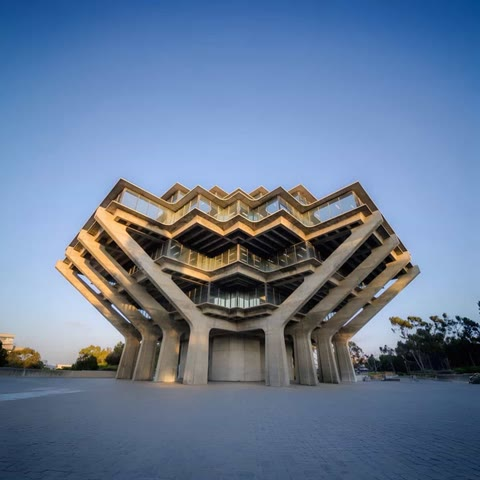
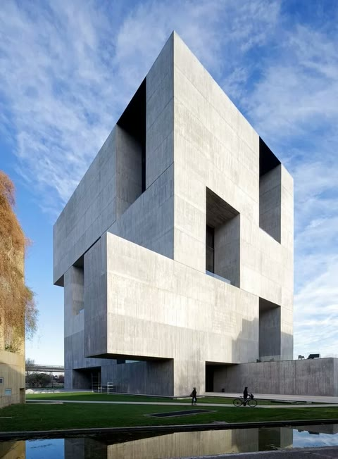
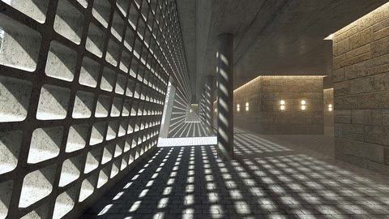

Bytové domy
Panely, věže, monobloky. Žádné rozkošné rodinné domky se sedlovou střechou.

Bohuslav Cement — architekt, který staví věci, jež přežijí tebe i tvoje vnoučata. Beton, geometrie, žádný marketing.


Třicet let dělám brutalismus. Žádné prosklené krabice, žádné dřevěné fasády, co si hrají na les. Beton, ocel, geometrie. Když si u mě objednáš stavbu, dostaneš stavbu — ne PowerPoint.
Mí klienti chodili na obhlídku v roce 1995 a říkali to samé jako v roce 2025: „Vypadá to drsně.“ Beru to jako kompliment.

Panely, věže, monobloky. Žádné rozkošné rodinné domky se sedlovou střechou.

Knihovny, úřady, kulturní centra. Stavby, co přežijí ředitele i jejich nástupce.

Vracím brutalistickým stavbám důstojnost. Žádné zateplování polystyrenem do barev pastelek.

Hodina mého času = hodina, co tě zachrání před chybou v projektu za milion.
Žádné formuláře. Stačí napsat.